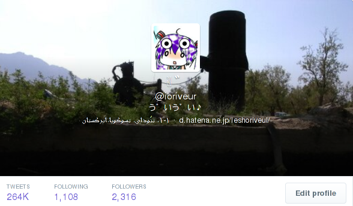

About me..

強いUnicode
先史時代
ASCIIテーブルの先頭1bitは誰にも占有されていない広大な平原として広がっていた。
そこで、それぞれの民族の出自を持つ英雄たちが同時にその空間に入植することを
思いついたのだった。
また、WordStarなんかでは、先頭1bitが1であれば単語の最後のマーカーであるという仕組みになって
大破滅を招いた。
先史時代
太古の昔、人々は、自らの信じるシステムのデフォルトエンコードを使用していた。彼らのなかには、
自らの言葉を書き記すことすらかなわぬ人々が大勢いたし、
国ごとに独自にASCIIコードの上位bitを民族固有の領土として支配していた。
警察国家、メール到来
この混乱に乗じて勃興した警察国家がある。それはメールシステムと呼ばれ、全世界を席巻した。
この国家の厳格な法によれば、文字は7bit幅で表現されなければならなかった。
1bitの容量の削減が、この後更なる悲劇を呼ぶ。
警察国家、メールの反乱
しかし、人民はこの抑圧に対して立ち上がった！
彼らは自らの文字を、バイナリとしてエンコードすることで7bit検閲を回避したのだったが……。
Emoji諸王国の勃興と破壊的イノヴェイション
しばらくして、絵文字という表意文字が独自に発明された。
これには様々なバリエーションが存在した。
彼らはその独自の文字をやりとりするために、独自の端末を用いなければならなかった。
このとき、すでにメールシステムはガタガタになり、様々なクライアントでいろんなテクニックが
用いられた結果、収集がつかなくなっていた。
民族解放運動Unicode
こうした状況の中、冷戦構造が消滅し、
ロシアからイスラエルへメールを発射したり、ウェブサイトを
みせあったりと民族の交流が深まるあいだ、文字はもうハチャメチャなことになっていた。
そこで脚光を浴びたのがUnicodeである。
Unicodeについて少し
Unicodeでは、文字は直接には1つの表現方法をも持たない。
その代わり、Unicodeでは、文字はひとつのコードポイントを割り当てられている。
コードポイントは様々な表現方法を持っている。
文字は、概念になった。
Unicodeで禅問答
ところで、
A
は
a
とは違う。
Unicodeで禅問答
A
は
A
とは一緒である。
ここまではみんなハッピーだ。
Unicodeで禅問答
ß
はひょっとして
ss
とは一緒なんだろうか。
Unicodeで禅問答
あるいは、
ـتـ
はひょっとして
ت
とは一緒なんだろうか。
Unicodeで禅問答
あるいは、
כ
はひょっとして
ך
とは一緒なんだろうか。
Unicodeで禅問答
そして

は
بسم الله الرحمن الرحيم
と書くべきか、それとも一文字か。
Unicodeで禅問答
文字とは何かを定めるのに、多くの時と血が流れ、その代償としては多すぎる人が死んだ。
その言語の専門家が、その言語のその文字はどう扱うかを決め、Unicodeを作る偉大なバベルの建築家たちは
その人の言うことを信じるほかなかった。
Unicodeで禅問答 あるいは虚と実
コードポイントは、文字を表す虚ろなものでしかなかった。
それを実際のバイナリ列に起こすには、様々な方法が編み出された。
UTF-16とC言語
UTF-16は、16bitでほとんどの文字(基本多言語面)を表そうという企みである。
A、すなわちU+0041は0x0041で表せられる。
ところで、C言語のscanfとその仲間たちについておさらいしよう。
UTF-16とC言語
当然こういうのは死ぬ。
while(str[i]) {
i++;
}
有名なnull-terminate問題に、文字列の途中に0x00が出てくる問題が加わった！
UTF-16とC言語
そこでwchar_t、fwscanf()が加わった。
しかし、これが扱う文字がUTF-16と決まったわけではない。
みんな(アプリケーション開発者は)ガンバレ〜〜！
PHPが世界を飲み込む
PHPのサイト曰く
"string は、文字が連結されたものです。PHP では、 文字は 1 バイトと同じです。つまり、256 個の異なる文字を使用可能です。 これは、PHP が Unicode をネイティブにサポートしていないことも意味します。"
PHPが世界を飲み込む
"string は、文字が連結されたものです。PHP では、 文字は 1 バイトと同じです。つまり、256 個の異なる文字を使用可能です。 これは、PHP が Unicode をネイティブにサポートしていないことも意味します。"
"その関数の目的上、 utf8_decode() 関数は入力が UTF-8 であることを前提とし、 utf8_encode() 関数は入力が ISO-8859-1 であることを前提としています。"
"結局、Unicode を使うプログラムをきちんと書くには、 うまく動かない関数の使わないよう注意するしかないということです"
PHPが世界を飲み込む
そして世界中の案件は炎上し、木々や緑は消え、水も姿を消し、一面焼け野原になった……。
レンダリングの話
文字を文字と理解するのはもうGoとかJavaとか使ってできたとしましょう。
さて、いろんな言語を学びたいみたいな機運が高まる現在、いろんな言語をあなたの環境は表示できますか？
アラビア語のレンダリング